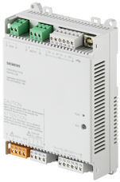
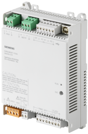
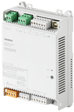
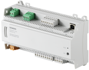
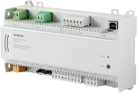
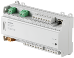

DXP2 and DXR2 MS/TP product description
DXP2.. and DXR2.. are compact, programmable room automation stations for HVAC, lighting and shading applications of which DXP2 are high temperature rated automation stations.
Every DXP2.. and DXR2.. room automation station has a fixed I/O mix and preloaded application types. The assortment of preloaded application types depends on the I/O mix of the room automation station.
Product description
 | DXR2.M09-1, Compact room automation station
Order number: S55376-C116 Download data sheet: CM1N9206 |
 | DXR2.M09T-1, Compact room automation station
Order number: S55376-C117 Download data sheet: CM1N9206 |
 | DXR2.M10-1, Compact room automation station
Order number: S55376-C115 Download data sheet: CM1N9206 |
| DXR2.M10PL-1, Actuating room automation station
Order numbers: Download data sheet: A6V11259964 |

 | DXR2.M11-1, Compact room automation station
Order numbers: Download data sheet: CM1N9207 |
 | DXR2.M12P-1, Compact room automation station
Order numbers: Download data sheet: CM1N9207 |
| DXR2.M17C-1, Compact room automation station
Order numbers: Download data sheet: A6V10959860 |
 | DXP2.M18-1 and DXR2.M18-1, Compact room automation station
Order numbers: Download data sheet: CM1N9207 |
Additional information
On-board I/O functions | |
DRA installation guide | |
DXR2.M.. properties | |
Subsystem-specific extension properties |
Power supply data
DXR2. | Power supply | KNX PL-Link Power supply [mA] | Field power supply | |
|---|---|---|---|---|
DC 24 V (W) | AC 24 V (VA) | |||
M09-1 | AC 230 V | 50 |
| 4 1) |
M09T-1 | AC 230 V | 50 |
| 4 1) |
M10-1 | AC 230 V | 50 |
| 4 1) |
M10PL-1, M10PLX-1 | AC 24 V | 50 | - | 6 |
M11-1 | AC 24 V | 50 |
| 6 |
M12P-1, M12PX-1 | AC 24 V | 50 |
| 6 |
M17C-1, M17CX-1 | AC 24 V | 50 | 2.4 | 6 |
M18-1 | AC 24 V | 50 | 2.4 | 6 |
1) Max. 4 A for the common load of the Triacs and field supply. See data sheets for details.
NOTICE

Equipment damage due to parallel operation of internal and external KNX power supply
Operating internal and external KNX power supply in parallel may lead to severe damage of the automation station.
- If an external power supply is used, make sure the internal KNX power supply is turned off.
NOTICE
Communications fail due to insufficient KNX power supply
Communications of the KNX rail fail if the power consumption of the connected devices with KNX PL-Link and KNX S-Mode exceeds the power supplied by the internal or external power supply.
- Make sure that for devices with KNX S-Mode the correct value for power consumption is set in the Hardware and network editor > Inspector window > Properties > General tab.
- Make sure the power supplied by the internal or external power supply is larger than the power consumed by the connected devices with KNX Pl-Link and KNX S-Mode.
Inputs and outputs
DXR2. | Inputs | Outputs | ||||||||
|---|---|---|---|---|---|---|---|---|---|---|
ΔP | Digital Input | Universal Input 1) | Resistive Input, Vertical Sash | Triac high side 2) | Triac low side 3) | Triac output (Total VA) | Analog output (0..10 V) | Relay (3 step fan) | Relay (1 step fan) | |
M09-1 |
| 1 | 2 |
|
|
|
| 3 | 3 |
|
M09T-1 |
| 1 | 2 |
|
| 4 | 4 | 1 |
| 1 |
M10-1 |
| 1 | 2 |
|
| 4 | 4 |
| 3 |
|
M11-1 |
| 1 | 2 |
| 6 |
| 4 |
| 3 |
|
M10PL-1, M10PLX-1 | 1 | 1 | 2 |
| 4 |
| 48 | 1 |
|
|
M12P-1 , M12PX-1 | 1 | 1 | 2 |
| 6 |
| 48 | 2 |
|
|
M17C-1, M17CX-1 |
| 3 | 4 | 2 | 4 |
| 48 | 4 |
|
|
M18-1 |
| 2 | 4 |
| 8 |
| 48 | 4 |
|
|
1) Configurable: Ni Pt NTC Res 0..10V DI
2) Max. 6 VA per Triac
3) Max. 4 A for the common load of the Triacs and field supply. See data sheets for details.
Supported devices
The following device types can be combined with DXR2.M.. room automation stations:
- Temperature sensors (passive and active with AC 24 V power supply)
- AC 24 V actuators and DC 0...10 V actuators with AC 24 V power supply
- Signal inputs and relay outputs
- Devices with KNX PL-Link